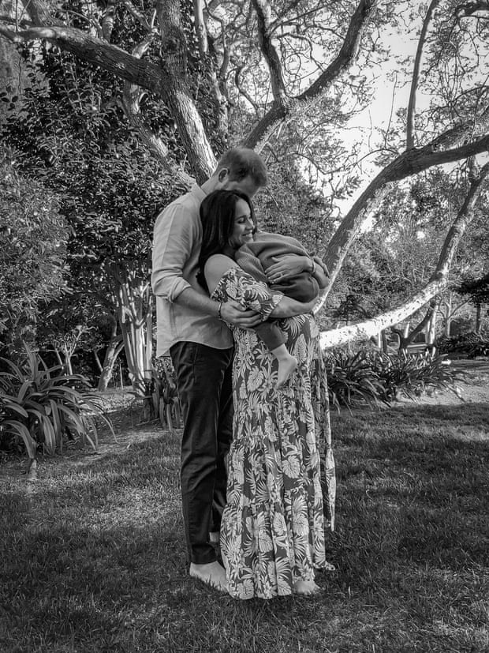

Palace under pressure to respond to Harry and Meghan racism claims
‘Hand grenade’ Oprah interview shakes royal family to its foundations and leaves members open to suspicion
Meghan and Harry Oprah interview live updates
Buckingham Palace was under pressure to respond to allegations of racism within the highest echelons of the royal family following an interview with the Duke and Duchess of Sussex that threatened to have a devastating effect on the reputation of the monarchy.
In the most shocking disclosure, Harry and Meghan described how someone within the household had asked about how dark the skin tone of their baby son Archie would be – with the US chatshow host Oprah Winfrey clarifying later that neither the Queen nor the Duke of Edinburgh were behind the remark.
But the couple’s refusal to identify the family member in their damning TV interview leaves other royals open to suspicion.
The allegation of racism within Buckingham Palace was one of several incendiary claims in Harry and Meghan’s tell-all interview which will have shaken the royal family to its foundations.
Meghan told Winfrey that, while she was pregnant with Archie, who is now 21 months old, a family member raised with Harry “concerns and conversations about how dark his skin might be when born”.
Winfrey told CBS This Morning that Harry told her it was not his grandparents who made the racist comment but that he would not reveal who it was.
Asked if there were concerns Archie might be “too brown”, Meghan told Winfrey that was a “pretty safe” assumption. Both she and Harry refused to identify the person, saying it would be “very damaging”.
Meghan suggested the fact Archie was mixed-race meant he was denied the title of prince. Under existing protocols, as the grandchild of a sovereign, Archie would automatically become a prince when his grandfather Charles acceded the throne.
But the couple indicated they had been told those rules would be changed, in line with Charles’s plan for a slimmed-down monarchy, leaving Archie without his birthright title or the security protection that goes with it. “It’s not their right to take it away,” Meghan said.
Racism was “a large part” of why the couple left Britain, said Harry, claiming that though the UK was not bigoted, the UK press, specifically the tabloids, was.
Boris Johnson refused to get drawn into the row. Asked whether the palace should investigate the allegations, the prime minister told a Downing Street press conference: “Perhaps the best thing I can say is that I have always had the highest admiration for the Queen and the unifying role that she plays in our country and across the Commonwealth. And as for all other matters to do with the royal family, I’ve spent a long time now not commenting on royal family matters and I don’t intend to depart from that today.”
However, the Conservative peer and government minister Zac Goldsmith claimed Harry was “blowing up his family” in a tweet that added: “What Meghan wants, Meghan gets.”
The shadow education secretary, Kate Green, told Sky News the couple’s claims were “really distressing, shocking” and called on the palace to investigate any allegations of racism. Last week it launched an inquiry into claims of bullying allegedly made by palace staff against Meghan.
The Labour leader, Keir Starmer, said the race and mental health issues raised by Meghan were “bigger than the royal family” and should not be put to one side. The children’s minister, Vicky Ford, stressed there was “no place for racism in our society”.
Asked about Joe Biden’s reaction to the interview, the White House spokeswoman Jen Psaki said Meghan’s decision to speak about her struggles with mental health “takes courage” and “that’s certainly something the president believes in”. However, Psaki said she would not offer additional comment on the situation “given these are private citizens, sharing their own story and their own struggles”.
In other startling claims, Meghan said of life inside the palace: “I just didn’t want to be alive any more.” Asked whether she had contemplated suicide, she replied: “Yes, this was very, very clear, and very scary.” Though she begged for help, and asked to go somewhere to seek help, she said she was told: “I couldn’t, that it wouldn’t be good for the institution.”
Harry criticised his father, saying he felt “let down” by Charles, adding: “There’s a lot of hurt that happened.” Charles stopped taking his youngest son’s calls after the couple’s public announcement they were to step down as working royals and the couple were cut off financially, Harry said, leaving them to foot their own security bill. Other claims included that:
- The Duchess of Cambridge reduced Meghan to tears in a row over the flower girls’ dresses before her wedding to Harry. Some reports claimed at the time that it was Meghan who made Kate cry. Comparing her treatment by the press with Kate’s, Meghan said: “Rude and racist are not the same.”
- The institution did not defend Meghan; she was “silenced” and officials lied to protect other royals. Family members were jealous of Meghan’s success on an a tour of Australia and New Zealand.
- The couple had a secret private exchange of vows days before their formal wedding. Their second child will be a daughter.
- Winfrey’s interview lasted three hours and 20 minutes but was edited down to one hour and 25 minutes. After recording it, the couple are understood to have felt relief at finally having the opportunity to set the record straight from their point of view, and comfortable with the answers they gave.
Harry said that no one in the royal family had said they were sorry the couple left royal life because they felt unsupported. “No, sadly not,” he told Winfrey, adding they were warned it was their decision and “therefore the consequences are on us”.
His family were in a toxic environment in their relationship with the press, he said. His older brother, William, was “trapped in the system”, he added, but asked whether William wanted to leave, Harry replied: “I don’t know, I can’t speak for him.”
He denied the couple had “blindsided” the Queen when they announced their intention to quit last year, saying he had “too much respect” for his 94-year-old grandmother.
But he said he was “really sad” that she had been given “some bad advice” when she suddenly cancelled a planned face-to-face with him before the Sandringham summit where details of the couple’s departure were thrashed out.
On Monday the photographer Misan Harriman released a picture he had taken of a pregnant Meghan with Harry and Archie, as he congratulated them on the news they are expecting a baby girl.
The royal biographer Penny Junor said the couple had “lobbed a hand grenade into the family” and worried there would be “no coming back”. The royal author and historian Robert Lacey said the repercussions would “reverberate for a long time, because they are more than about personalities. This is first-hand testimony to a dysfunctional family.”
Ingrid Seward, the editor-in-chief of Majesty magazine, said: “It’s probably the most damning condemnation of the royal family and how they operate I’ve ever heard.”
But Charles Anson, a former press secretary to the Queen, told Sky News: “I think the palace will be looking to try and reflect on this interview and take some of the issues forward that don’t exacerbate things and that lead to some reconciliation.”
The anti-monarchy group Republic called for an honest debate about the future of the monarchy and said the institution “needs to go”.
The Society of Editors attacked the claim that the UK press was bigoted. Its executive director, Ian Murray, said: “The UK media is not bigoted and will not be swayed from its vital role holding the rich and powerful to account.” He added it was “not acceptable” for the couple to make such claims without supporting evidence.
- In the UK and Ireland, Samaritans can be contacted on 116 123 or email jo@samaritans.org or jo@samaritans.ie. In the US, the National Suicide Prevention Lifeline is 1-800-273-8255. In Australia, the crisis support service Lifeline is 13 11 14. Other international helplines can be found at www.befrienders.org.
… as you join us today from Argentina, we have a small favour to ask. You’ve read 9 articles in the last year. And you’re not alone; through these turbulent and challenging times, millions rely on the Guardian for independent journalism that stands for truth and integrity. Readers chose to support us financially more than 1.5 million times in 2020, joining existing supporters in 180 countries.
For 2021, we commit to another year of high-impact reporting that can counter misinformation and offer an authoritative, trustworthy source of news for everyone. With no shareholders or billionaire owner, we set our own agenda and provide truth-seeking journalism that’s free from commercial and political influence. When it’s never mattered more, we can investigate and challenge without fear or favour.
Unlike many others, we have maintained our choice: to keep Guardian journalism open for all readers, regardless of where they live or what they can afford to pay. We do this because we believe in information equality, where everyone deserves to read accurate news and thoughtful analysis. Greater numbers of people are staying well-informed on world events, and being inspired to take meaningful action.
In the last year alone, we offered readers a comprehensive, international perspective on critical events – from the Black Lives Matter protests, to the US presidential election, Brexit, and the ongoing pandemic. We enhanced our reputation for urgent, powerful reporting on the climate emergency, and made the decision to reject advertising from fossil fuel companies, divest from the oil and gas industries, and set a course to achieve net zero emissions by 2030.
If there were ever a time to join us, it is now. You can power Guardian journalism and help sustain our future. Support the Guardian from as little as $1 – it only takes a minute. If you can, please consider supporting us with a regular amount each month. Thank you.
 https://www.theguardian.com/